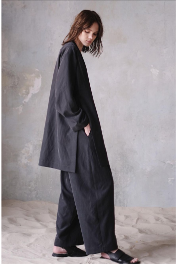
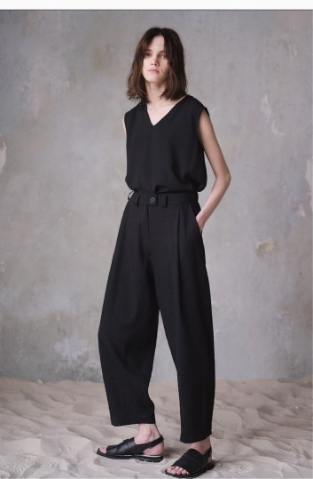
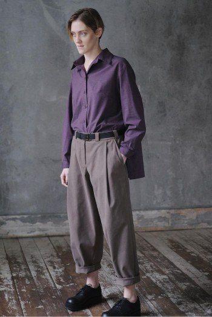
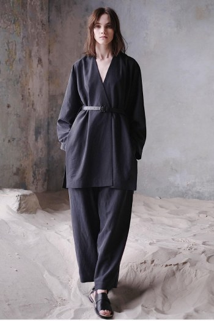
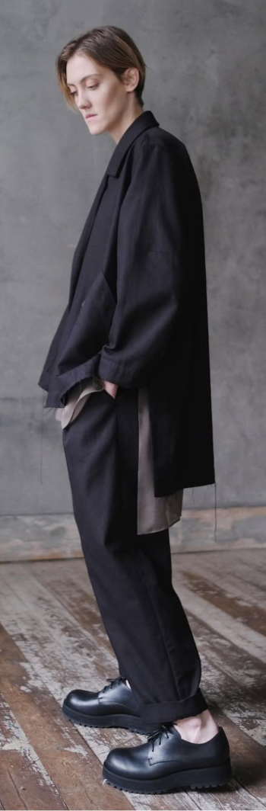
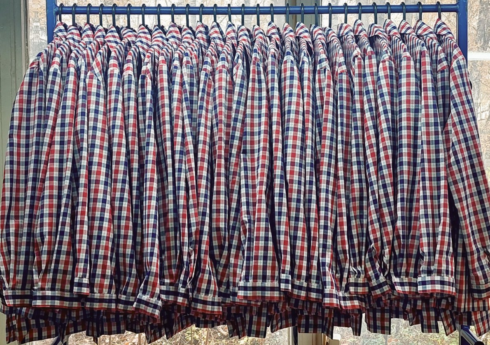
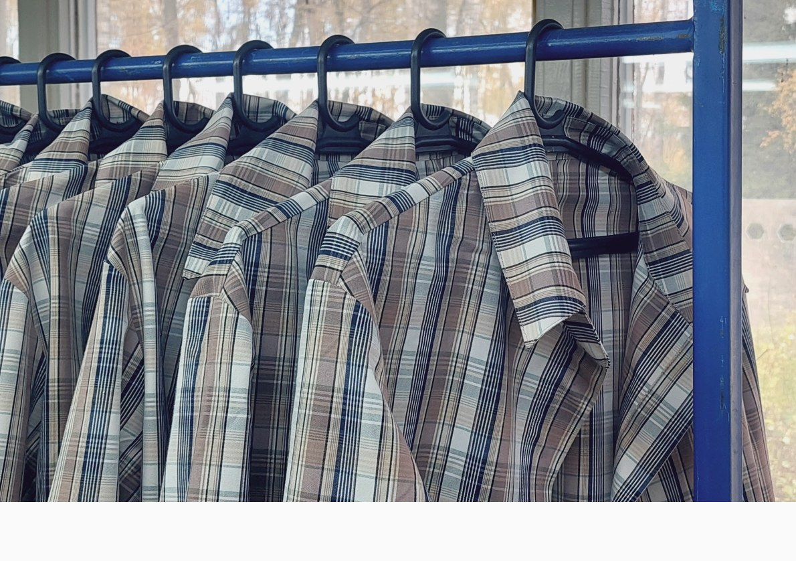

Этот проект строится вокруг сложных и нестандартных обработок, которые определяют характер изделия не меньше, чем сама форма.
Здесь ключевое внимание уделяется внутренней сборке: чистым швам, точности соединений, работе с плотными и чувствительными материалами, а также решениям, которые требуют отдельной технологической проработки и не допускают упрощений на этапе производства.







Каждое изделие проходит через последовательную настройку — от образца к тиражу — чтобы сохранить точность исполнения и качество обработки на каждом уровне.